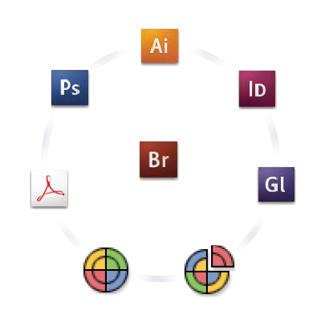

About color management in Adobe applications
Adobe color management helps you maintain the appearance of colors as you bring images in from external sources, edit documents and transfer them between Adobe applications, and output your finished compositions. This system is based on conventions developed by the International Color Consortium, a group responsible for standardizing profile formats and procedures so that consistent and accurate color can be achieved throughout a workflow.
By default, color management is turned on in color-managed Adobe applications. If you purchased the Adobe Creative Suite, color settings are synchronized across applications to provide consistent display for RGB and CMYK colors. This means that colors look the same no matter which application you view them in.

If you decide to change the default settings, easy-to-use presets let you configure Adobe color management to match common output conditions. You can also customize color settings to meet the demands of your particular color workflow.
Keep in mind that the kinds of images you work with and your output requirements influence how you use color management. For example, there are different color-consistency issues for an RGB photo printing workflow, a CMYK commercial printing workflow, a mixed RGB/CMYK digital printing workflow, and an Internet publishing workflow.